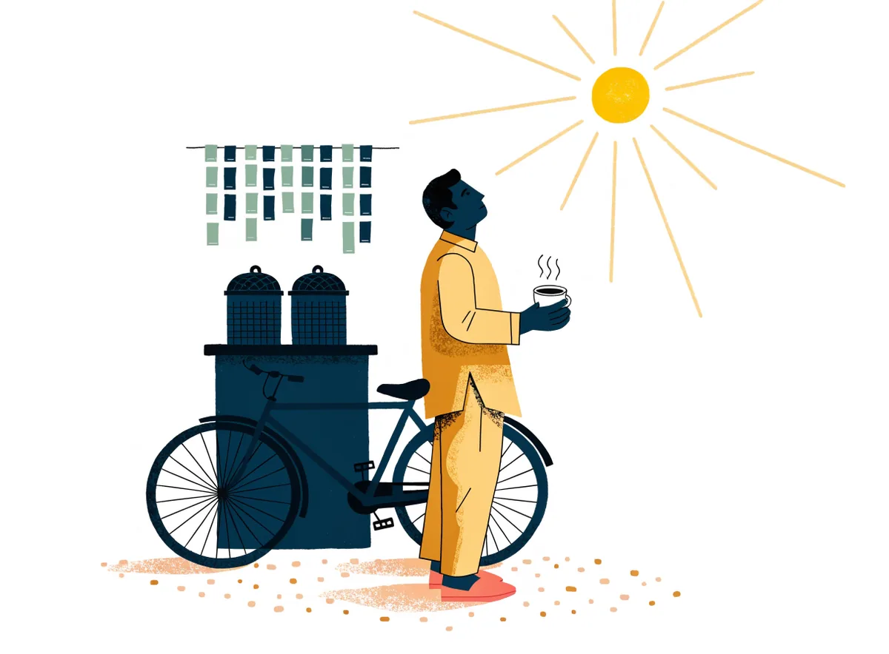
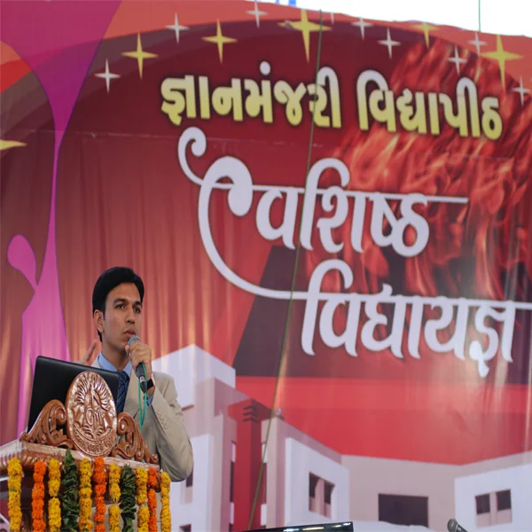

Mission Deaddiction · Dr. Keyur Parmar
A 90-day programme, not a lecture.
Gutka in the shirt pocket, mawa from the corner shop, a bidi after lunch, a quiet drink in a dry state. In Saurashtra these are everyday habits with deep roots, and willpower alone rarely beats them. We pair medicine with a quit-day plan, daily check-ins, a craving SOS on your phone and one family member who has promised to help. વ્યસન છોડવું શક્ય છે.

What are you quitting?
Each habit leaves the body differently. Pick yours.
Three facts, what the clinic does about it, and what it is costing you.
Three things to know
Far more people in Gujarat chew than smoke. In Saurashtra the product is usually mawa, the tobacco, lime and areca mix twisted into plastic, or gutka. In this clinic it is the single most treated habit.
Restlessness, irritability, poor sleep and a bigger appetite are worst in the first 72 hours and fade over two to four weeks. Each craving itself lasts only three to five minutes.
Gutka and mawa cause oral submucous fibrosis, the stiff mouth that will not open fully, and oral cancer, of which India has among the highest rates in the world. A white or red patch that has not healed in two weeks needs a doctor now.
What the clinic does
- Fagerström test, adapted for smokeless tobacco, to measure how dependent you are
- A look inside your mouth, and a referral the same day if a patch needs a biopsy
- Nicotine replacement (gum, lozenge or patch) and prescription medicines that reduce craving, chosen and dosed by the doctor, never over the counter
- A quit day within two weeks, daily check-ins in week 1, follow-ups to Day 90 in clinic or on video
Two minutes first? Take the Fagerström test.
Money you will save
Count packets of gutka, mawa pudis or bidi bundles together.
By Day 90 of the programme you will have kept ₹9,000.
Three things to know
Gujarat has had prohibition since 1960. People drink alone, fast and in secret, so problems are noticed late and shame runs high. Country liquor from an unknown source adds methanol risk: blurred vision or confusion after drinking is an emergency, call 108.
For a daily heavy drinker, withdrawal starts 6 to 12 hours after the last drink: shaking, sweating, vomiting, a racing heart. Between day 1 and day 3 it can bring seizures or delirium, with confusion and hallucinations. This needs a doctor, sometimes a few days in hospital.
Sleep and mood take four to six weeks to settle after the last drink. Liver tests usually improve within weeks, blood pressure often falls, and the morning stops being the hardest part of the day.
What the clinic does
- AUDIT questionnaire, blood pressure, liver and blood tests
- Medically supervised withdrawal: at home with daily contact when it is safe, in hospital when it is not
- Medicines that reduce craving, started and adjusted by the doctor after withdrawal is over
- Family sessions, because in most homes the drinking was a secret everyone knew
- Video follow-ups for patients outside Bhavnagar
Honest answers, nothing stored: AUDIT-C self-check.
Money you will save
One drink is a small peg, a bottle of beer or a glass of country liquor.
By Day 90 of the programme you will have kept ₹21,600.
Three things to know
What is sold today is far stronger than a generation ago, and charas stronger still. "Natural" does not mean mild, and bhang at a festival is not the same as a daily joint.
Regular use that starts in the teens is linked to a higher risk of psychosis, and to poorer memory, motivation and exam results. The risk is highest when someone in the family has had schizophrenia or bipolar disorder.
Irritability, poor sleep, vivid dreams and a lost appetite for one to two weeks. Most people who say they cannot sleep without it are sleeping normally by the third week.
What the clinic does
- A careful check for early psychosis: suspiciousness, voices, withdrawing from people. Treated early, it usually settles
- Treatment of the anxiety or low mood that the ganja was quietly covering
- Sleep support through the withdrawal fortnight, without sleeping pills becoming the next habit
- Parents involved with the young person's consent, not behind their back
Three things to know
In Saurashtra the opioid is more often codeine cough syrup, tramadol or pain tablets than brown sugar, and the pills are usually sleeping tablets bought without a prescription for months.
Opioid withdrawal feels like the worst flu of your life, with body pain, loose motions, sweating, gooseflesh and no sleep for about a week, but by itself it is rarely dangerous. Stopping sleeping tablets suddenly after long use is dangerous: it can cause seizures. That taper is done by the doctor.
Opioids with alcohol or sleeping tablets slow breathing. If someone cannot be woken or is breathing slowly, call 108 and follow the overdose steps.
What the clinic does
- A full assessment of what, how much and for how long, with a urine test where it helps
- Medically supervised withdrawal, and a discussion of longer-term treatment options with the doctor
- A written, dated taper plan for sleeping tablets, with the family holding the strip
- Treatment of the pain, insomnia or anxiety that started it
Three things to know
The WHO's ICD-11 lists gaming disorder. The test is not how long, it is whether the phone or the game has taken priority over sleep, study and people, and carries on despite the damage, for most of a year.
Among the students we see, the pattern is late-night short videos and online games, sometimes played for money. The first casualty is sleep, and the exam-stress visit comes three months later.
ADHD, anxiety, low mood or plain loneliness sits under many heavy phone habits. Treat that, and the phone loosens its grip without a fight at the dinner table.
What the clinic does
- Screening for ADHD, anxiety and depression in the same visit
- A family screen plan: phone-free hours the whole house keeps, not a rule for one person
- Sleep first: a fixed wake time and no phone in the bedroom, measured on the ISI sleep scale
- Structured time that replaces, rather than removes: sport, a class, a job on the shop counter
For a child under 12, start with the child clinic.
Time you will get back
Check your phone's own screen-time report, then enter it.
Halve it and you get back 38 days a year.
The programme
Ninety days, six checkpoints, one doctor who knows your name.
The first two weeks decide most quits. The next ten keep them. Every step is in the clinic on Jail Road, or on video if you are in Mahuva, Palitana, Talaja or anywhere else in Saurashtra.
Day 0 · Assessment
Fagerström for tobacco or AUDIT for alcohol, blood pressure, weight, a look at your mouth, blood tests where the doctor needs them. Together you pick a quit day within the next two weeks, steering clear of a wedding or a festival if you can.
Quit day plan
Remove the supplies: the pouch in the pocket, the stock in the drawer, the running account at the paan shop. Tell three people the date. Medicines that reduce craving are started under the doctor before the day arrives, so the first morning is not fought bare-handed.
Week 1 · Daily check-in
Two minutes a day on My Care: craving score out of 10, sleep, mood, any slip. If two days go quiet, reception calls you. This is the week the programme earns its keep.
Weeks 2-4 · Weekly follow-up
Video or clinic, your choice. The doctor adjusts medicines against your craving scores, and you work through the triggers you logged: after lunch, the tea stall, the drive home.
Months 2-3 · Fortnightly
Cravings are rarer now but sharper when they come. Fortnightly visits, the Day 30 visit with your family supporter, and a plan for the first wedding season without the habit.
Day 90 · Review and maintenance plan
Your scores side by side with Day 0, a decision on how long to continue medicines, and a written plan for a slip: who to call, what to do in the first hour, when to come in. Next review at six months.
Your milestones
Try it with any date. Saved on this phone only.
In the programme each badge is a real check-in or visit in the clinic's record, not a sticker. Day 90 is the review visit.
MBBS, MD Psychiatry, gold medallist · addiction psychiatry · Mission Deaddiction since 2012
ProfileIf you slip
Relapse is data, not failure.
Most people who quit for good had a slip on the way. The ones who stay quit are not stronger; they log the slip, find the trigger, and change one thing. The doctor reads your log the way a physician reads a blood pressure diary: to adjust the plan, not to scold.
Log a slip
Demo. On My Care this goes straight to your doctor's pre-visit brief.
| When | Trigger | What helped |
|---|---|---|
| 12 Sep | Wedding or festival | Left the paan counter, had an ice cream instead |
| 28 Sep | Tea stall or paan shop | Did the 3-minute SOS in the car |
Sample entries to show how the log reads.
Craving SOS
A craving is a wave. It peaks in about three minutes and passes whether you feed it or not.
Urge surfing is the one skill every person in the programme learns on Day 0. Start the circle, breathe with it, and watch the clock run out on the craving. Works offline, works at the tea stall, works at 2 am.
Tap start
Notice where the craving sits in the body. Throat, jaw, hands. Watch it change while the clock runs.
Delay ten minutes
You are not saying no. You are saying "not for ten minutes". Most cravings do not survive the wait.
Reasons I am quitting
Examples. Replace them with yours.
Add your first reason below. It will be here the next time a craving hits.
Saved on this phone only.
Call for backup
A craving shared is a craving halved. Your quit buddy agreed to this on Day 0. The message is written; you only tap send.
Message my quit buddy Talk to Saathi now Clinic line, 24x7Family pledge
One named person. That is the difference.
In our experience and in the research, support from one named person makes the difference between a quit that lasts three weeks and one that lasts. Not the whole family, not a lecture. One person who has agreed, in writing, to four specific things.
In most Bhavnagar homes that person is a wife, a mother, a son, or the friend who sits next to you at the shop. They come to the Day 30 visit. They do not police; they walk. તમે એકલા નથી.
Mission Deaddiction in schools and colleges
Fifty programmes so far. The next one can be yours.
Since 2012 Dr. Parmar has taken Mission Deaddiction to more than 50 schools, colleges and institutions in and around Bhavnagar. The session is short on lecturing and long on questions, and it is built for the age in the room.

What a session covers
- 45 to 90 minutes, sized to the audience and the timetable
- Age-appropriate: Std 8 hears a different session from a final-year B.Com class
- How addiction works in the brain: dopamine, the habit loop, why "just once" is never once
- Refusal skills practised out loud: what to say at the paan shop, in the hostel, at a party
- Where to get help: Tele-MANAS 14416, the clinic, and how to bring a friend who is struggling
- A 15-minute teacher briefing: what to notice, what to say, whom to call
Who can invite us
- Schools
- Std 8 and above, in Gujarati or English medium. Parents' evenings too.
- Colleges
- Classrooms, hostels, NSS and NCC units, orientation week.
- Companies
- Factories and offices: GIDC units, the diamond units, Alang and the port, banks.
- Villages
- Gram panchayats, youth mandals, mahila mandals, anywhere a hall holds thirty people.
We cover Bhavnagar district and nearby. Session language is Gujarati unless you ask otherwise.
Request a programme
Start today
The best quit day is within two weeks. The best first step is today.
Book a Day 0 assessment with Dr. Parmar, in the clinic or on video. Prefer not to give your name at reception? Use private consult mode: an alias, a phone number and a discreet slot.